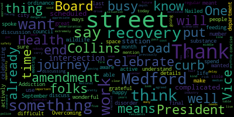
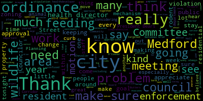

AI-generated transcript of City Council 09-10-24
English | español | português | 中国人 | kreyol ayisyen | tiếng việt | ខ្មែរ | русский | عربي | 한국인
Back to all transcripts
[Bears]: City Council, September 10th, 2024. Mr. Clerk, please call the roll.
[Adam Hurtubise]: Councilor Callahan. Vice President Collins. Present. Councilor Lazzaro. Present. Councilor Leming. Present. Councilor Scarpelli. Present. Councilor Tseng. Present. President Bears.
[Bears]: Present. Seven present, none absent. The meeting is called to order. Please rise to salute the flag. Announcements, accolades, remembrances, reports, and records. 24-462 offered by Councilor Lazzaro.
Resolution to recognize and celebrate National Recovery Month. Be it resolved that the City Council recognize and celebrate September as National Recovery Month. Councilor Lazzaro.
[Lazzaro]: Thank you. So September is the month that we spend celebrating folks who are in recovery from substance use disorder. It's a great time to understand how difficult that journey can be and how wonderful life can be in recovery. There are a number of ways that people can celebrate that, but I wanted to make sure that it was something that we were aware of as a council and as a city. I spoke with the Board of Health in Medford and there's Medford Overcoming Addiction and our Board of Health department is very active in this space as well. So I'm just grateful for all the folks that I know who are in recovery and that they've actively on this journey, and I'm happy to be able to celebrate that here in Medford. Thank you.
[Bears]: Thank you, Councilor Lazzaro. Any further comment by members of the Council? Seeing none, is there a motion?
[Tseng]: Motion to approve.
[Bears]: On the motion to approve by Councilor Tseng, seconded by Vice President Collins. All those in favor? Aye. Opposed? Motion passes. 24-465 offered by Councilor Scarpelli.
Be it resolved that the City Council send our deepest condolences to the family of longtime Medford resident, volunteer, and all around amazing person, Frank Zizzo, on his recent passing. Councilor Scarpelli.
[Scarpelli]: Thank you, Mr. President. Again, it seems like I do this way too often when we talk about Medford residents that leave an impact. Medford lost one of their favorite sons, Frank Zizzo, Frank leaves behind his amazing wife, Dorothy, and his children, Frankie Jr., Kerry, and son, Tyler. I think that a great family man, loves his grandchildren. If you watch, follow him on Facebook, you realize what kind of an amazing person he is. Grandfather, father, and Method Mustang. He dedicated his life to make sure that kids in our community got what they needed, especially at the hockey rink when it came to Medford Youth Hockey, and especially when it wasn't that popular, our female youth, our female girls program. He really helped build that program and Medford is sad, for his loss and really would like to send our deepest condolences to the Zizo family. And he's the type of person that has left a legacy that not too many people will forget if you knew him. And those who didn't should ask about him because it's someone that you want to, you want to remember or at least know his name because he's that, he was that much of an impactful person. So again, Thank you, Mr. President.
[Bears]: Thank you, Councilor Scarpelli. Any further comments? I'd just like to turn to Vice President Collins. I just want to send my condolences as well. I went to school with Tyler. I know it's a hard time. On the motion of Councilor Scarpelli, seconded by Vice President Collins. All those in favor? Opposed? Motion passes. Is there a motion to take the paper under suspension?
[Tseng]: So moved.
[Bears]: On the motion of Councilor Tseng, seconded by Vice President Collins to take the paper under suspension by Councilor Scarpelli. All those in favor? Opposed, motion passes. 24-466 offered under suspension by Councilor Scarpelli. Be it resolved that the Bedford City Council observe a moment of silence in recognition of the lives lost on September 11th, 2001. Councilor Scarpelli.
[Scarpelli]: Thank you, Councilor Bears. I know that with so much, so much devastation happening across the world, we seem to sometimes forget the pain and suffering that we felt here in our country. back in 2001. I think it's a day that everybody will remember where they were and left such an impact in everybody's lives that we should never forget September 11, 2001. And what that did to society and what it did to our world. And remember all those people that perished that day and beyond because of the cleanup and you see the frontline workers that are passing now that worked on the rubble. It's an impact that we still feel today. And I think that we should never forget that day. Uh, and, uh, it's something that I'd make the motion for a moment of silence for this council. Thank you.
[Bears]: On the motion of councilor Scarpelli to approve and have a moment of silence seconded by Councilor Tseng all those in favor. I'll oppose motion passes a moment of silence. Thank you. Records, the records of the meeting of August 13th, 2024 were passed to Vice President Collins. Vice President Collins, how did you find the records?
[Collins]: I found them in order, I move for approval.
[Bears]: On the motion to approve the records by Councilor Collins, seconded by Councilor Callahan. All those in favor? Opposed? Motion passes. 24-033, offered by Vice President Collins, Planning and Permanent Committee, August 14th, 2024, report to follow.
Councilor Collins.
[Collins]: Thank you, President Bears. This was another meeting of the Planning and Permitting Committee with the City Council's Zoning Consultant, Ines Associates. I believe at this latest meeting, we were considering potential options for proposed updates to the zoning for the Mystic Avenue Corridor, as well as Salem Street Corridor. These are two of the shared priorities between the City Council, the city's planning department and I know many constituents in the city of Medford. So I'm really glad for the opportunity to prioritize that in our comprehensive look at our zoning and make sure that we are considering many goals and priorities for those two key corridors as we have this opportunity to change the zoning that will inform what it's easy to build and see and experience there. And we will continue meeting with our, as I like to remind us every regular meeting, we'll continue to meet with Innes Associates at least monthly in the Planning and Submitting Committee, including tomorrow night at 6 p.m. Move for approval.
[Bears]: Other motion approved by Vice President Collins, seconded by Councilor Lazzaro. All those in favor? Opposed? Motion passes. 23-449 offered by Councilor Lazzaro.
Sorry about that. Public Health and Community Safety meeting August 13th, 2024 report to follow. Councilor Lazzaro.
[Lazzaro]: Thank you. We meant to discuss what I think will be the final discussion on the wildlife feeding ordinance. Nailed down the last details of that, and then we will be discussing it today in our regular meeting.
[Bears]: Thank you. Thank you. On the motion of Councilor Lazzaro to approve the committee report, seconded by. Seconded by Vice President Collins. All those in favor? Opposed? Motion passes. 24-461, resolution to meet and discuss updates to the Road and Control Ordinance.
Be it resolved that the Committee on Public Health and Community Safety meet with the Health Director to consider updates to the Road and Control Ordinance, Chapter 6, Article 4. Vice President Collins.
[Collins]: Thank you, President Bears. So I've been in conversation with, among other people within City Hall, our Board of Health Director, Health Director, Director O'Connor, about some amendments to the rodent control ordinance that she and her team are seeing on their side that they believe could help them better implement best practices and rules for residents and businesses to be part of our multi-pronged approach at mitigating the growing rodent population in the city. They've identified some changes that we could make within the text of the ordinance that would give them more latitude to enforce, such as how trash receptacles are placed and maintained on property. I've talked to a lot of people in the city and outside about this, and they say one of the problems that we're running into is just that we need to keep it tighter when it comes to how trash and recycling and things that attract rodents, how those are stowed around residential and business areas. So they've identified some changes in the ordinance that they would like for the council to consider that will just make enforcement easier on their side. We're considering a committee meeting date for next week just to get the ball moving on that quickly. And at the same time, I believe we're also going to consider a paper that's already before the council, an overgrowth ordinance, which will have some same hopeful goals of giving the city more tools to where we see those problem areas in the city that are places where rodents are congregating, where the threat population is concentrated, give the city more tools to do enforcement around making sure those are cleaned up so that we're not harboring rodents where we don't need to be. So I would motion to move this to the Public Health and Community Safety Committee.
[Bears]: On the mention of Vice President Collins to move this paper to, refer this paper to public health and community safety, seconded by Councilor Tseng. All those in favor? Opposed? Motion passes. Vice President Collins.
[Collins]: I would motion to suspend the rules to take papers 24-463 and then public participation out of order.
[Bears]: On the motion to take paper two, four, four, six, three and public participation out of order. Seconded by seconded by Councilor Tseng all those in favor. Opposed motion passes. Do you want to speak before I read the paper? Sure. 24-463, a resolution to reappoint City Clerk Adam L. Hurtubise, be it resolved by the Medford City Council that we reappoint City Clerk Adam L. Hurtubise to a new three-year term, be it further resolved that this term shall expire on September 10, 2027.
[Adam Hurtubise]: Thank you, Mr. President. Because my reappointment is on the agenda tonight, I have filed an ethics disclosure downstairs that this could create the appearance of a conflict of interest. I'm going to step aside for this portion of the meeting, and Annie Kelly from our office is going to handle clerk duties for this point.
[Bears]: Thank you. Welcome, head clerk Annie Kelly. Thanks. Any discussion on the paper or any motions? Vice President Collins.
[Collins]: A motion to approve.
[Bears]: On the motion to approve by Vice President Collins, seconded by Councilor Callahan. Madam Clerk, please call the roll.
[Kelly]: Councilor Callahan? Yes. Vice President Collins? Yes. Councilor Lazzaro? Yes. Councilor Lemme?
[Bears]: Yes.
[Kelly]: Councilor Scarpelli? Yes. Councilor Tseng? Yes. President Bears?
[Bears]: Yes. Having affirmative and negative, the motion passes. Thank you, Head Clerk Annie Kelly. Thank you.
[SPEAKER_04]: So there's no conflict.
[Bears]: All right. Next, we'll go to public participation. First, we have a petition paper from Cindy Watson. I will read it while we welcome Cindy to the stage. To the Honorable City Council of Councilors, the undersigned respectfully pray for support from the City Councilors in recognizing the importance of the Chevalier Theatre. The Chevalier is the economic engine for the City of Medford. Cindy Watson, 65 Valley Street, 4D, Medford, MA. Welcome.
[Watson]: Thank you. Thanks. Pardon me? Okay, thank you. I've come before the City Council many, many times, pre and post Bill Blumenreich presents, and I'll also tell you that I wear my hat on my sleeve, I got a fire in my soul, and sometimes a mouth I can't control, so I'll try to be good during this meeting. As many of you know, Bill Boomerite took over about five years ago, he just renewed his contract. He is the absolute economic engine for the city. When he has a show, businesses are booming. I can't tell you how many business owners have come up to me. It's sad that Salvatore's is still vacant. But there is a lack of support from the city in all areas, whether it be the city council, school committee, et cetera. Had this meeting, discussions with the board. We just celebrated our 30th anniversary. And for the life of me, I can't understand why there's not more participation from everybody. So I'm here to sort of embrace all of you to get you to participate. And I also want to give a couple of highlights that we've done over the last 30 years. And I want to reiterate that I'm here on behalf of the friends in the Jean Mack Auditorium. Folks probably don't know that we do a lot, a lot of work for underprivileged children. through the former Boys and Girls Club, which is now overseen by the Mystic Y. So again, just so that you can see, all of this came from volunteers, 30 years, half of them are still on the board, doing an incredible amount of work. And again, I'm just gonna give you a brief synopsis. We've raised more than $1.4 million. for the Gene Mack Gym Recreation Center. We have a tremendous grant writer on the board. He's been responsible for spearheading grants that have brought in $500,000 to install air conditioning. This is all volunteer. $88,000 to restore 19 original broken windows. $90,000 to restore, I'm sure everybody's seen it, it was an eyesore going down Forest Street, the Chevalier facade. We're fortunate to have State Representative Paul Donato on the board. He brings in probably through now various governors $100,000 a year. People may or may not know that each ticket that's sold at the Chevalier that Bill has a show Sometimes you can have two or three shows a week, 1,900 seats. Let's take two shows. That's $300 that goes back to the city. So again, I could go on and on. But just for whatever reason, it seems to be a dearth. of just participation. So the former city councilors, and maybe a lot of you folks, I don't know as well as the others, but we had a city council that was on the board. We had folks that came to our annual meetings. We had folks that were very, very enthusiastic about supporting the Chevalier. So I'm here tonight to try to work collaboratively with all of you to help our efforts. I mean, I don't see people when we're down at various events in the city. So again, it's very frustrating. You know, we want to work with you to reach out. We've, Bill has been unbelievable. He's very philanthropic when he hasn't sold a show out. He'll give tickets, extra tickets to folks over the senior center, people who are economically advantaged, don't have an opportunity to go to a show. He calls me or some of the other board members and will say, listen, he just, there was a show last Saturday, gave 20 seats away. people in the city of Medford would never have the opportunity to do this. We've also transpired the youth center, as I said. These are kids, again, from diverse backgrounds, have never had the opportunities for educational devices, which we help support. So when people think of the Friends of Chevalier, they just think, oh, well, they're working with a theater, but we're not. It's a sort of a huge collaborative effort. So I'm asking you to sort of, if you can make more of a presence in the community, maybe start October 24th, come to the annual meeting, maybe become a member. It's only $20. We are revamping our membership. I mean, I'll admit it needs some work. Maybe a tiered system that become a member for $100, you'll get a free theater ticket. But somehow the city has to recognize the strength of the Chevalier Theater, the board, and all that Bill Blumenreich does. So I'm happy to answer any questions. To assist anybody that wants to help us, we meet once a month. Like I said, some of these folks, we've got a 94-year-old woman who's on the board for 30 years. May mark your birth, people probably know us, Citizen of the Year. Like I said, Paul Donato, Ken Crouse. I mean, I can't say enough about the sport. So I can recognize him because I'm with him once a month, but I think the city again has to acknowledge the work that the Friends of Chevalier does.
[Bears]: Thank you, Cindy. I'll go to Councilor Tseng. Thank you.
[Tseng]: First and foremost, I do want to thank you for your work.
[Watson]: Well, it's not just me. It's a team. I know, I know. I was going to get there.
[Tseng]: I was going to get there. The friends of the Chevalier and Gene Matcham, I think really do do a lot of work for us. I've been lucky enough to be on the Community Fund Committee. where we see the applications from you guys trying to help, you know, we have a limited pot of money with that fund, but, you know, the mayor and I, in particular, advocated to try to make sure you guys got some money there. There's so much more that needs to be done, though. You see, I mean, really the application, there's so much more that our city could be helping with and funds that we need to come in. I think it'd be helpful if we put a resolution on the next agenda, thanking the friends of the Chevalier and GMAC, Jim, for all the work that you've done over the last few decades. I, you mentioned the membership. I was, I was, I was, I was thinking about, you know, just asking everyone in the room here to sign up for a membership. I know you were very persistent with me to remind me to make sure that I signed up for it and I did sign up for it. Ken Kraus and I talk a lot whenever we see each other about what the theater needs and what the square needs in regards to the theater. the gym and its deeds. I really enjoyed, I really, I think, value that you brought up the gym as well, because I think people forget about the value of that gym. But I remember when I was young, I went, I did programs there. There are so many, so many of my friends, little brothers and sisters do programs there as well. I think I lament if the invitations to us to the annual meetings have slipped through the cracks. I know we all get a lot of invitations as councillors, and I just wanted to ask through the chair if you could send us that invitation to the annual meeting again, just to make sure we all have it in our inboxes as well. but I am grateful for the work that you all do. And I know it's not just you, and I know it's not just Ken, it's many people pulling the operation together. And I appreciate you coming here tonight to keep us accountable and keep us on our toes.
[Watson]: I have to paralyze resistance with persistence, Justin.
[Bears]: I think that's what you're saying, Vice President Collins.
[Collins]: Thank you. Thank you so much for coming tonight I really appreciate it, especially knowing that there is a another even more star studded event that you could have been at tonight thank you so much for coming and speaking to us and, you know, continuing to raise the profile of Australia and in addition to all the work that you and the rest of the board is doing every week and every month we really appreciate it. And I appreciate the, you know, kind of the reminder the call to action of how much this team is doing behind the scenes week in and week out. I know as a Councilor, one thing that I'm that I think we're always keeping an eye on kind of on an annual basis is making sure that the casino mitigation funds I know that there's a portion of that that's earmarked for the Chevalier, we want to make sure that that remains because it's so important for this very uniquely Medford institution to be able to stay important, stay special, and stay competitive when these like very large corporate venues such as Encore do come into the region. In addition, I've always really valued getting those like snapshots of progress and whenever the Chevalier comes forward with the CPA application, It's always like this incredible pamphlet of what's been going on and how much more there is to do, whether it's restoring the building. I know there was a big organ restoration project that was wrapped up the past couple years. Anyway, I know that's just really scratching the tip of the iceberg when it comes to how much is going on behind those doors. every year. So thank you for, you know, platforming the membership drive, the annual meeting. I would love to get more involved and get a little bit more into the details about what you all are working on all the time. I think as Councilors, and especially as, you know, as residents, whenever the Chevalier is bringing in, you know, another great act every weekend, you see the cars. I know there's so often that I'm like walking down Forest Street. I'm like, wow, they got that person? Amazing. What a pull. So it's visible. what an incredible theater this is here in Medford. And, you know, it shouldn't go without saying how much work goes into keeping it that way. So thank you.
[Watson]: It's welcome. We had to fight like hell to, you know, fought off Wynn at the Everett Casino because they were a huge threat. Yeah. And we worked very, very hard. You know, we were some elite folks in addition to others, but it was, it was close.
[Bears]: Cindy, thank you so much for coming down. I just want to thank you and the friends for all the work that you do. You know, whenever we see a CPA application or community fund or whatever it might be, I know we want to support the Chevalier as much as we can. And supporting the friends is a key part of that as well. and the organ society and all the other folks who have done so much for the for the building, you know, I'm on the Brooks estate board. So I kind of understand firsthand a little bit what it feels like sometimes when you're trying to raise money for the city owned property, and then the city is not pitching in services and resources that are needed. You know, I am an advocate of trying to put more of the city's funds into supporting Chevalier directly, I know that there's a very very small amount of money that's going to support Chevalier right now from the city budget. And I think that's really important. So thank you for coming down. And I do want to just ask, not just for us, but to share with anyone who may be watching, what's the best way that folks can join as a member? Is there a website to go to? And what's the best way to sign up for the annual meeting?
[Watson]: You can let me know, because it will be at the condo that I live in. So it's the association room. So I'm assuming that everybody will be there on the 24th?
[Bears]: I can't promise everybody, but sure, some of us will attend. But if the public wants to attend, how can they find out more and sign up?
[Watson]: There's plenty of info on the website, and we do send out a membership drive a month prior to that. Okay.
[Bears]: Approximately. And is it friends, what's the URL? friendsofthechevalier.com?
[Watson]: Yes, that's actually another website, Zach, that we're revamping. Okay. So that should be up and running within a month. There was some problems, some issues. But you can go on, you know, the computer, just look under other friends and you'll, there's ample information.
[Bears]: Great, thank you so much, Cindy.
[Watson]: All right, thank you for your time.
[Bears]: All right, this was public participation. Do we have any other public participation at this time? please come forward. This is the public participation section of the meeting. If you have any comment you'd like to make not related to a paper on the agenda. Seeing no one in the chamber, no hands on Zoom, public participation is closed. Hearings, 24439. Petition for a special permit for hours, Panda Express. Legal notice, Medford City Clerk's Office. Continued notice of a public hearing. The Medford City Council will hold a public hearing in the Howard F. Alden Chambers on the second floor of Medford City Hall, 85 George B. Hassett Drive, Medford MA. Enviso on Tuesday, September 10, 2024 at 7 p.m. A link to be posted no later than Friday, September 6, 2024 on a petition for a special permit for hours, followed by Panda Express, 491 Riverside Avenue, Medford MA 02155. The petitioner is seeking to extend the hours of operation of the restaurant in a commercial C1 zoning district at 491 Riverside Avenue, parcel ID Q1511. The petition seeks a special permit for hours Monday through Sunday, 11 p.m. to 3 a.m. Petition and plan may be viewed in the office of the city clerk, room 103, Medford City Hall, call 781-393-2425 for any accommodations and aides. The city of Medford is an EEO-AA-504 employer. By order of the city council, signed Adam L. Hurtubise, city clerk. Councilor Scarpellilli. Thanks, Councilor Villes. Do you want me to reopen the public hearing or do you want to go?
[Scarpelli]: We can open it and then I could fill in the blanks.
[Bears]: The public hearing is open. We'd like to hear from the petitioner.
[Amante]: Yes, I am the petitioner. My name is Juan. I'm the manager for the Panda Express located at 491 Riverside Avenue. We've been there since May of 2018. And through the years, we've seen the demand of people, the local community wanted to come back. And we see our late night sale business continues to increase. So we do want to serve the community in the late night hours, those emergency responders, those who are getting off work late, to extend our hours to three.
[Bears]: We just get your last name for the record. Great. Um, with that, I will go to Councilors for questions.
[Scarpelli]: Uh, thank you. Three o'clock in the morning. Yes, that's not happening. So I will, I will tell you, I think that when you look at the neighbors, unfortunately you do a butt neighbors, correct? Across the street, you have, you have families and homes across the street. I mean, I think we can be very fair to look at what we've done historically for neighboring businesses with the idea of competition and fairness. But I will, Council President, I did ask for a report. I haven't heard back from the building office for inspections. So I'm actually gonna ask to move this to a date certain, but I wanted to make sure we spoke tonight because I wanted to get a report back to see if we've had any concerns or issues in the past. But I think that it's important that we understand that, um, Three o'clock in the morning is a little excessive and I think that that's when you're looking at what neighboring restaurants. I think we've given some permits or some options till I believe one o'clock in the morning. But after that, I don't as one counts I would never entertain if people want that late late hours for anything. For consumption, I think they can go into a business district and outside the city of Medford. I don't think any resident, to be honest with you, this councilor, the three o'clock is just unreasonable. This is why we have the special permit in place. I think we have a week to revisit it, to be honest with you. I think the latest we have is one o'clock in the morning for some restaurants. But again, even that to me is a little questionable because you are across the street from some homes. So it's something I'll have to really think of before I make my vote. But I think that before we do anything this evening, I'm going to ask to, after everybody adds any information or questions they have, but I'll be looking to move this to get a report back from the, the building department to see with any complaints or issuances that have happened in that area. Not just your location, I'm not saying your location did anything wrong, I'm asking to see what's happening in that area. And they haven't, unfortunately, they're a little undermanned, and so no one got back to me in time. So hopefully we get an answer, and then next meeting we'll have a clearer vision of what I can vote on. But I thank you for being here tonight.
[Bears]: On the motion of Councilor Scarpelli to continue to a date certain next meeting. Next meeting is next Tuesday, September 17th. Perfect. Any further discussion? Vice President, Councilor Callahan, promotion.
[Callahan]: Just wanted to ask, it does say Monday through Sunday, so seven nights a week. Can you talk a little bit about whether you've seen more demand on weekends, are there certain days that you would like it to be later, other days when it would be earlier, just based on what you've seen, what you think would work best for your business?
[Amante]: I think overall, this business has been increasing more towards the late night, especially on the Friday, Saturday, Sunday area. So we do see the higher volume on those days. Any further discussion?
[Bears]: Vice President Collins.
[Collins]: I just wanted to thank you for appearing tonight, and I think my fellow councilor's suggestions are good ones. When we consider special permits like these, we wanna make sure that we're staying within what's been afforded to other nearby residents that we're keeping with precedent that's been established. But I'm sure that we can, like we have in the past, work together with yourself, city staff, residents, to make sure that we seek some sort of compromise that's still an improvement for everybody. Thank you. Of course, thank you.
[Bears]: Thank you. On the motion of Councilor Scarpelli to continue this to the September 17th regular meeting, this public hearing seconded by Councilor Leming. All those in favor? Opposed? Motion passes. So we'll come back next week and talk a little more. Thank you guys. Thank you. 24-457, request for amendment to previously approved grant of location.
Do I have a wave of the reading? I do not want to read this entire letter from... Thank you. On the motion of Councilor Collins, seconded by Councilor Tseng? President Bears?, the reading in favor of summary. All those in favor? Opposed? Motion passes. There is a request from National Grid to the City Council. There's a petition. There's a grant location application that was previously approved, and this is a request for amendment. We've received communications from KP Law and City Engineer Wartella. The folks that want, I could read them, but, Do we have a synopsis from the engineer? Sure, great. Do we have a brief synopsis of the request?
[SPEAKER_04]: Yes.
[Radzig]: I'm Chris Radzig from the National Grid District Design Department. And online, we have Mark Riley, the Assistant General Counsel for National Grid. We're here to speak on the amendment request for a grant of location previously approved by the Council last November. Can you hear me? Yes, we can hear you.
[Rielly]: Yeah, a brief background might be helpful, um, because it's been a while since November, since the city last saw this petition. Uh, it was a petition that, uh, which was granted to install underground electrical conduit on main street, um, close to the intersection of South street and then about 370 feet Southward. Um, the company had met with Mr. Wartell and others to regarding the project and, um, had come to what we thought was an agreement about street restoration. And then that was reflected on a civil drawing that Chris has and can hand out, because I think it was erroneously left off when we filed. It was supposed to be attached to the letter. During the hearing, the city council hearing, an additional condition was added that required the company to repair other streets that weren't affected by the project. Um, and then that, and then in addition, subsequent to the hearing and further conversations with, um, Mr. Wartell, it became clear that we didn't quite agree on certain aspects of the restoration in particular, what was meant by curb to curb repaving. So, um, we're here to sort of remedy that. Um, and the, the specifics of the requests are in the letter, but in some, um, we. Our proposal is to amend the condition to remove the requirement to repair or repave irrelevant streets, and then to allow us to either restore Main Street curb to median curb, or to pay the SPOF per section 74-1442B. And I can get into the explanation of our objections to restoring streets that aren't being disturbed, if you'd like, but I'll pause there.
[Bears]: Thank you. And if I remember correctly, if I may, just that what we had requested was that if there was a certain amount of pavement that was not going to be restored, that it be the restore other pavement in lieu of restoring that pavement. I believe that was the condition so that the square footage of pavement would, that would be the same that was restored or saying no.
[Radzig]: That was the general gist of yes. The requirements.
[Bears]: Yes. Okay. I welcome his hard work.
[Scarpelli]: that the biggest issues we have is that when they do open the streets, not just, not your company, but we're seeing too many, too many jobs that are left half done, and it's creating more havoc when people leave. And I think the biggest piece is having a curb-to-curb process. That's something that, to me, as one councilor, is a non-negotiable. But from what I, just for clarification, Are we saying that the roads that we're requesting, they will be paved curb to curb, but we're asking for other streets that are impacted to be repaved? I just need some clarification on that.
[Rielly]: Yeah, I think there's sort of two issues. There was a curb to curb, What grid understood at the hearing and in earlier discussions with the city engineer was that curb to curb meant that we would restore curb to the median curb, you know, the next nearest curb, which was the median strip. The city engineer is taking the position that it should be curb to the, across the median to the other side of Main Street, which we're not touching. Um, and it, it exceeds any disturbed area. Um, we're willing to, to restore for the, for the length of our trench. We're willing to restore main street curb to median curb. Um, so there was that dispute about what curb to curb meant. The second piece was that, um, you know, having to repair roads that we weren't touching at all that weren't main street. Um, and that's, you know, if, if nothing else happens today, that that has to come off, that's just a non-starter because as you can imagine, you know, grid is always kind of in the position of having to navigate requests from municipalities across our service territory. And if, if, whether it's Medford or someone else is asking us to repair different roads and we're disturbing, that's going to increase costs tremendously to everyone's detriment. So we have to be a gatekeeper on that type of thing.
[Bears]: Okay, Mr. President, if I can. Sure, I just wanna, go ahead, Councilor Scarpelli, then we'll go to Vice President Collins and Councilor Lazzaro. I can also read the letter from council to the city.
[Scarpelli]: Okay, I too am a little leery of, of the impact that this will make not only for the increased costs that would be then put on our ratepayers within the community. I know that because National Grid's not going to We're not going to take it on the chin, right? I mean, it's going to be passed off somewhere. But as I'm looking at it online, where we're looking at South Street and traversing down Main Street, I know exactly what you're saying. That median was already developed. That was in front of the police station. Is that where?
[Radzig]: Yes.
[Scarpelli]: So that's already been done. Yeah, I could see your apprehension with that going across the street of the medium, because if I can ask the city engineer in this map and taking this route, even today, I didn't see, it didn't seem to be uneven or really damaged in that area on the other side of the medium anyway. where we're seeing the work being done down South Street and all the way down Main Street, that is a no brainer of curb to curb, but that's something that I'd have to consider now. Thank you.
[Bears]: I could read the letter from Council if that would be helpful. I just wanted to get that summary out there as well. Dear Attorney Riley, thank you for your letter made 29th address to the City Engineer. The City of Medford has asked us to respond as Council. We have consulted with City Engineer, Director of Public Works and the Mayor in making this response. then location as you know this matter concerns the proper interpretation of that certain grant of location 23445 issued by the city council on November 14 2023 approving national bridge petition to construct a line of electric underground electric conduits in main street at the location specified The installation requires cutting and excavating a trench in the Main Street pavement for a length of approximately 370 feet. Main Street in this location was fully reconstructed less than five years ago and contains a median strip separating opposing lanes. This median strip is laid on top of the pavement bed, extending as a unbroken hall from the curb on one side of the roadway to the curb on the far side. As a condition of the grant of location, the City Council required National Grid to provide repaving of another roadway. equal to the work associated with curb-to-curb roadway restoration within the limits of the Main Street project. Curb-to-curb is an industry standard term referring to the full width of the roadway, and the restoration condition must be interpreted as such. The Council is familiar with the roadway in question, and if the Council's intent was to limit restoration limits to curb-to-median curb, it could have so specified. Please further note that Main Street is not a quote divided road. That term is used specifically in the industry for highways and state routes with a large median frequently unpaved and northbound southbound designations. Main Street is not designated that way. Restoration standard, the city readily acknowledges the authority of the Commonwealth to regulate the placement of utility lines in the city streets and with the application order DTE 98-22. entitled standards to be employed by public utility operators when restoring any of the streets, lanes, and highways and municipalities as an extension of that authority. In particular, section nine of the order sets forth the standards for pavement restoration following disturbance by utility. Section 9.1 provides that quote, all pavement disturbed by the work, unquote, shall be replaced with quote, homogeneous and in-kind pavement to the original strength and condition. Quote, homogeneous is defined as of uniform structure or composition throughout. Sections 9.2 through 9.15, 9.15 set forth particular standards relative to pavement restoration without regard to the age of the roadway. Section 9.16, however, provides that the municipality quote, shall have a jurisdiction to determine the pavement repair method to be utilized on all pavements which have been installed for less than five years. Pursuant to the grant location, the City of Medford has determined that the work proposed in Main Street, a street reconstructed within the past five years, requires curb-to-curb restoration within the project limits or its equivalent. As set forth in Section 9.16, quote, method is simply the procedure for accomplishing the task, and a curb-to-curb restoration is the method the City has reasonably selected. pursuant to section 9.16 of the order to restore Main Street to its original strength and condition, the structural integrity and life of a paved street as a whole is compromised by partial exclamations and patches, and such compromises can be avoided by curb-to-curb reconstruction to maintain the structural integrity of the street. The case, Colonial Gloss versus Town of Wilmington, cited by National Register for its interpretation of pavement with restoration requirements does not concern the disturbance of city streets reconstructed within the past five years, and thus does not apply to this matter. The timing of restoration work, the terms and conditions for work in public streets allowed by a grant of location are determined by the appropriate permanent authority as designated by section 74-141 of the city ordinances. In this case, the permitting authority for the Main Street project as approved and conditioned by the city council is the engineering division of the Department of Public Works. As you are aware, National Grid attempted to bypass the permitting process by contacting the DPW commissioner directly after meeting with the city engineer. Requiring the restoration work prior to commencing the Main Street project is essential to the city to ensure that the required work is satisfactorily completed. National Grid has repeatedly not completed promised work, one still being from 2019, and therefore the permit authority engineering is conditioning the permit for the Main Street project accordingly. Thank you for your attention to this matter. If you have questions, please do not hesitate to contact me, very truly yours, Jonathan D. Eichmann, attorney at KP Law. So it sounds like fundamentally the dispute is over the roadbed of Main Street and the city engineer and our council have made it clear that the median on Main Street is above the foundation of the roadbed and therefore curb to curb does not mean curb to median curb, but one curb to the other side because the roadbed is continuous under the median. Is that correct?
[Radzig]: For whatever reason that might have been. That seems to be, yeah, the sticking point. Our original intention for restoration when we talked about Curve the Curb at the original petition hearing was median curb, which we felt was reasonable restoration for the approximately two foot wide trench that we proposed to dig along the edge of road curb on the west edge of Main Street in that section.
[Bears]: Okay, Vice President Collins and Councilor Lazzaro, Vice President Collins.
[Collins]: Thank you, President Bears. Thank you for being present to me. Thank you for your presentation. I'm feeling a little confused about what's changed since, well, I'm not confused about what's changed. I'm a bit confused about why there's been a change since the agreement that the council and the city department came to. With National Grid last fall, I think that you know we had a essentially a contract between the city and National Grid stating the agreement curb to curb and stating these conditions that there would be an equivalent square footage or whatever the proper terminology is in this case that would be restored on adjacent seats close to the affected area. Those are the stipulations that this council added to the special permit. And we've had that in place since November. So I admit I'm a little surprised to hear that characterized as a non-starter now, many months later. To be honest, I still think that the stipulations are very reasonable. I'm a little surprised to hear the notion of this affecting utility rates for Medford ratepayers because we know that rates are not set on a granular city by city basis like that so that strikes me as a surprising thing to hear put forward in a public meeting I don't think that we should be making a decision based on that because we know that's not true. And if I recall correctly from our discussions about this last term. Part of the context around this conversation is National Grid did work in a similar area of Long Main Street quite recently, within five years, so this is asking the Butters to, you know, of course it's all for good reason, but it's asking the Butters to go through that inconvenience, again, in a relatively short timeline, and I think that's why it's important to make sure that if the Butters are to be put through that, that, you know, we get back an appropriate public benefit in the term of that curb-to-curb restoration. And as long as there's work being done, you know, disrupting traffic and neighbors in the area, I think it's appropriate to stick with the original stipulation that we have equivalent square footage restoration in those other areas that the Council stipulated back in November. Thank you.
[Lazzaro]: Vice President Collins stole some of my things that I was going to say, but thank you. That was very concise and well put. One thing I did want to mention was that this is an amendment to a previously approved contract, as Vice President Collins mentioned. So this was something that was already agreed to. We've, we've said many times curb to curb being the industry standard so nobody ever says median. And I can also say I have, I live on a street that had work done. I think it was before the past five years, and there was a gas line that was replaced by National Grid under my street, and only half of our street was paved, which means there's a seam in the middle of the street, which means that there is already deterioration in the center of the road. That's why it's important that we carry on the paving from one end of the street to the other end of the street. Main street being an extremely busy road, that intersection being complicated to drive through as it is. We have the police station, we have a fire station. It's very busy. I wouldn't want to put our residents in any kind of situation where they would be facing any more complicated or dangerous scenarios at that intersection. So I think it's pretty clear to me that this is not something I would want to risk safety or cost in the future, but I appreciate the opportunity to look into it more in depth. Thanks.
[Bears]: Thank you. Just a minute. We'll go to attorney, we'll go to Councilor Callahan. You can tell it's been a month since I've done this. Councilor Callahan and Councilor Tseng.
[Callahan]: Thank you. I wanted to mention that I did knock on thousands of doors last summer and fall, and this issue came up really a surprising number of times. How many residents commented that within the first few years after completely repaving a street, that some project would come in and rip up the street again, and that they felt that that was a poor use of city funds. So I think this is important that we, as a city, require full repaving of city streets when it is within five years of the paving of a street. I'm sure that it is within the business model of National Grid to fully repave roads that have been from curb to curb that have been paved within the last five years. simply because that is just a normal process of doing business, doing the kind of business that you do. It may also be something that you realize that when a city council has changed personnel, that perhaps you might get a different opinion. And that may be your job, but my job is to fight for what the city should be getting in this business contract. And within this business contract, it is, The normal thing, the thing that we need to request is that you do full curb-to-curb repaving. And if the agreement was made in the past, that it makes more sense for both parties for that to be moved to a different street, but that the cost of the repaving is fully reimbursed by National Grid, then I feel very comfortable with that agreement that was made in November.
[Tseng]: Thank you. I echo my council colleagues frustration with the matter. I think Councilor Callaghan put it really well. I hear this a lot from our residents. You know, having read through the two memos from the attorneys, having read through the cases cited and the statutes at hand, I think I would recommend to the Council that we table this matter, that we seek a meeting with legal representation just to do our due diligence to figure out what these cases mean, what precedents they hold for us, and what rules we're bound to. And I would put that in the form of a motion.
[Bears]: A motion to table is undebatable. Is it about the motion itself? Yeah. And technically we can't actually table, it's not gonna be a motion to continue the public hearing to a date certain, which is debatable. It's not a public hearing. It's an amendment to grant allocation. Nevermind, so we can table it. What's your question?
[Lazzaro]: If we table this amendment, does it delay the work that is scheduled, any work that is scheduled or anything that needs to- I don't know, but that's-
[Bears]: Okay, there's a delay to the work.
[Collins]: Is there work currently scheduled?
[Radzig]: Yeah, is there work scheduled? We've been attempting to do the work, I'd say for a year and a half. We've been working through many steps to get to the point where we can go in and get an approved road opening permit. And we haven't been able to do that yet. This is one of the last items to clear up.
[Bears]: Okay, I do have questions myself and haven't had the chance to ask them. I just think since the rate payers were brought up, do you know what the annual profit was of the Massachusetts Electric Company last year?
[Radzig]: I don't, no.
[Bears]: It was $104 million. The year before that it was 120, year before that 122. Your parent company in the UK? Annual profits, 7.97 billion. So I think the assertion of returning this to the rate payers is indicative of the failure of the Commonwealth of Massachusetts to structure our public utility system in a way that is beneficial to the public, and not in a way that pads the profits of very large corporations, which aren't even headquartered in this country, nevermind the state. Is your motion to table? All right. On the motion to table of Councilor Tseng, seconded by Councilor Scarpelli. Mr. Clerk, please call the roll. Sure, we have a letter from legal.
[Tseng]: I don't.
[Bears]: Sure. On the motion to table and request legal representation by Councilor Tseng, seconded by Councilor Scarpelli. Oh, yes. And by the way, when I said $7.97 billion, it's actually 7.97 billion pounds. My bad. Mr. Herbies, please call the roll.
[Adam Hurtubise]: Councilor Kellogg?
[Callahan]: No.
[Adam Hurtubise]: Excuse me?
[Callahan]: No.
[Adam Hurtubise]: Vice President Collins?
[Collins]: Yes.
[Adam Hurtubise]: Councilor Lazzaro?
[Lazzaro]: Yes.
[Adam Hurtubise]: Councilor Leming?
[Leming]: No.
[Adam Hurtubise]: Councilor Scarpelli?
[Scarpelli]: Yes.
[Adam Hurtubise]: Councilor Tseng?
[Tseng]: Yes.
[Adam Hurtubise]: President Bears?
[Bears]: No. 4 in the affirmative, 3 in the negative. The motion is tabled. 6-4, petition for a common victor's license and is on market. Give me one moment here. Business, Muammar Barakteli, Nazar Market, 325 Rivers Edge Drive, Medford, and owner at 103 Beach Street, apartment one, Belmont. On fire, we have business certificate 2024, number 20. The petition has been received, letter of compliance received, state tax ID received, workers' compensation received, treasure collector received, building department received, fire department received, police department, traffic impact received, and health department received. Do we have a representative of Nazar Market here to speak to their petition? Anyone here for Nazar Market to represent on the petition? Either in person or on Zoom. If you're on Zoom, please raise your hand. Anyone for Nazar Market, common victuals license? Seeing none, is there a motion on the floor? On the motion to the table by Councilor Lazzaro, seconded by Councilor Callahan. All those in favor?
[RhUNhYl62Oo_SPEAKER_05]: Aye.
[Bears]: Opposed? A motion passes. 24-047, resolution to request linkage fee updates in the city of Medford.
an act updating the linkage exaction program in the city of Medford. This is a request by Councilor Leming pursuant to previous motions passed on updating the linkage fee. We have here two honorable representatives, Christine Barber, Paul Donato, and Sean Garberly, and our honorable Senator Patricia Jalen attached as a home rule petition to update the 1989 act. that established Medford's linkage program. Since 1989, this act has provided a critical source of funds for our police, our parks, our roads and traffic, and our water and sewers. The current act requires a new study every three years to update the exact amount of linkage fees, but in practice, since its institution in 1990, Medford has never performed such a study. Thus, the exact linkage amounts have not been updated since 34 years ago and have been drastically undervalued by the effects of inflation. As the city works to update the linkage fees and add a new source of revenue for affordable housing, We find that the original requirement for review every three years was likely to cost prohibitive. We therefore request two updates to the Act. The first extends the period of review from three years to 10 years. This mandates a more reasonable period in between studies. The second allows for automatic updates to linkage fees in between studies based on an inflation index. This would prevent fees from being undervalued over time from inflation and uses the same language that is as that established for the City of Watertown in 2022 Act of the Legislature, Chapter 302 of the Acts of 2022. We've enclosed the proposed language of the Act. Sincerely, Councilor Leming. An act updating the linkage exaction program in the City of Medford, Chapter 488 of the Acts of 1989, an act establishing a linkage exaction program in the City of Medford is hereby updated as follows. Section 2, Part 5 shall now read, the level of any exaction shall be reviewed at least every 10 years and reset as required based on the recommendation of the Office of Community Development and the Mayor of said City. In between reviews, updates to any exaction may be adjusted over time or retroactively based on changes in the consumer price index for all urban consumers compiled by the United States Bureau of Labor Statistics. Councilor Leming.
[Leming]: Thank you, Council President Bears. So this is the result of a lot of discussions that I've been having with the Office of Community Development as we try to update the linkage program, the capital improvements program. So this is essentially when developers come in to the city, they need to pay fees into certain buckets, which will help to improve the city as a whole. What we're trying to do with this program is first to update the original amounts that were proposed in 1990 when this was established. and we're also trying to add a fifth bucket in addition to the ones already mentioned in the letter for affordable housing to provide a more constant source of revenue to the affordable housing trust. We previously discussed changes to the ordinance at earlier meetings. The issue is that some of the changes that we're proposing after legal review, it turns out you would need to go back to the state to actually update those in a couple of ways. So in order to actually do these updates every three years as is required by that ordinance. One study to do that could cost as much as $150,000. And so doing that every three years is too cost prohibitive. Just performing the nexus study to establish a new bucket entirely for the affordable housing trust would probably cost about $80,000. The planning department has been going around trying to find consultants who are willing to do that. Medford has a bit of a unique linkage program. you know, they are having trouble finding a consultant for a reasonable price that can do that. So what this would do first is it would just extend that to save the city a little bit of money because the full linkage program really wouldn't update that much within a three year period that you would actually need to do that study. 10 years is a more reasonable timeframe to do these. We've gone 34 years without doing one. So I think getting away from that three year mark is reasonable. And the second, which is very important, is literally just copied and pasted from a similar program that Watertown did in 2022, where instead of just having these linkage prices set and just consistently get undervalued by inflation at the same time, there will be automatic updates from year to year so that the city is not losing money over time. And, you know, the less that we do, if we happen to have, you know, staff or boards who just don't do what they're supposed to do and perform these studies every few years, we would just be losing money over time. So again, it's a fairly simple update, but it does need to go to the state for approval. So I would motion to approve this home rule petition and send it to the mayor.
[Bears]: I'm going to approve the homework petition and send it to the mayor, seconded by Vice President Collins. Any questions or discussion? Councilor Kalia.
[Callahan]: I just want to comment that I'm incredibly thrilled about the work that Council on Learning has done. Okay. I'm thrilled about the work that Councilor Leming has done on this. As I hope people understand, this City Council has really taken the funding of this city very seriously. We have been underfunded for a long time, and the linkage fees are one of the few places where we can actually obtain more funds that does not affect property taxes. So this is something that I think everyone here should be really excited about. It has not been updated in 34 years. It is definitely undervalued. This is a way that we are going to bring income into the city. And then these changes that make sure that even if a study is not done regularly, that we continue to increase those at the price of inflation is truly a fantastic work. I'm very excited about it. So thank you, Councilor Leming, for the work that you're doing.
[Bears]: Thank you, Councilor Callahan. Any further discussion? I can. Councilor Scarpelli.
[Scarpelli]: I thank Councilor Leming to look into this, but I think we need to be very careful. Neighborhood communities have looked at the vision of development without a full comprehensive plan, and it's a good idea. I think it has to be looked at, but I think we better be careful in what, in totality, what we're doing in this community when you're looking for development and what we're asking for developers. We're seeing impacts in neighboring communities where they had some similar issues and they thought would be great ideas, and instead what they did is they further pushed developers further away from the communities. And It really hurt neighboring communities with the fact that neighboring communities lost millions of dollars because of their processes. So I think this is something that, you know, when Mayor McGlynn put this in place, he had the foresight to look at this and say, this is what we want. This is why they set up a trust for each, how do they put it, that each, each stakeholder that within the city that would be impacted, the impacted departments, which would have been, I believe the school department, parks and recreation, DPW, water and sewer.
[Leming]: The linkage funds are for? No, the linkage funds don't go to the schools. It listed in the letter. So, okay, so this is- Water, sewer. Yeah, so it's the police department, parks and rec, roads and traffic, water and sewers.
[Bears]: And the authorizing legislation also enabled an affordable housing, but that was never established.
[Leming]: Yeah, the authorizing legislation kind of gave a list of buckets that it could potentially go into, and affordable housing was one of them. But when they actually implemented it in 1990, they only chose those four.
[Scarpelli]: Right, right. I stand to say it was road and traffic, road and traffic linkage, parks and recreation linkage, police and fire linkage, water and sewer linkage. So I think that the other question people had was this, are we going to be looking at small development of someone who was refurbishing their home or adding an addition? And I said, no, it would be for... This wouldn't change what linkage currently applies to. Right. It would be with the special... Is it special... site plan review correct okay all right so i just like i said i think that uh understanding the history was important and i think that it does need to be looked at but i think that we should be very careful and you know without a real comprehensive plan that at least i haven't seen in what direction this city's going and when it's growth and development, I think it's a little dangerous. So thank you.
[Bears]: And I would just note that this change would just provide the authority to the city to update the linkage fees and to have an escalator for inflation costs. The city still needs to conduct a nexus study to actually update the rates. But I think we can all agree that what we assessed as the impact of police and fire roads or parks or streets and roads 34 years ago isn't what it's costing the city today.
[Leming]: Yeah, this would just allow for, this would just allow those automatic inflation based updates. And so it's a very specific, it's a very specific price index that's stated in the proposed change. And this was already done over in Watertown. So it is becoming standardized. neighboring cities, it would also save the city money by expanding the requirement to actually do these studies from three to 10 years, because these studies are pretty cost intensive.
[Bears]: It also addresses the Supreme Court decision around, I believe, the rationale for the nexus studies, that if you're assessing impact fees, it has to be based on a rational basis test for having a study. And that's part of this as well. That's a recent court case. Council Vice President Collins.
[Collins]: Thank you. I appreciate the councilor for bringing this forward for lots of reasons, including we have so many discussions inside these chambers about the pretty vast budgetary needs facing so many of our city departments, including the four that are specifically targeted by linkage. And we need to be keeping pace with other communities in adopting and evolving to those best practices for how to have sources of revenue that don't just come from sales tax and property tax because our needs are too great. We do have a comprehensive plan, the city of Medford comprehensive plan was put together over the course of several years with a ton of resident feedback. It is on the city website. And there's a lot of really big, beautiful lofty goals for how to evolve the Medford that we love today into the community that we're already striving to become. And we know how much funding and resources those goals take to manifest. And so, I think it's about time that we update this mechanism so that these large developers, the only ones that are targeted by linkage are paying their fair share. And that's really all that this is. And I think it's heartening to know that some of this research was based on the city of Watertown, which in recent years, if anybody's gone down Arsenal Street, they've seen a huge development boom, heartening to see. And I lost the second place that I was going with that font. In terms of the developer experience, I think that, you know, this creates a highly predictable increase that developers can know about. So I don't have any fears attached to this. I'm really glad that we're doing it. Thank you, Councilor Leming, for your leadership on it. And I know that City Hall staff were very helpful in the research as well. So I'll second the motion to approve.
[Bears]: I'll second the motion to approve by Councilor Leming, seconded by Vice President Collins. Any further discussion?
[Adam Hurtubise]: Seeing none, Mr. Clerk, please call the roll. Councilor Callahan? Yes. Vice President Collins? Yes. Councilor Lazzaro? Yes. Councilor Ntuk? Yes. Councilor Scarpelli? No. Councilor Tseng? President Bears?.
[Bears]: Councilor Tseng? President Bears?. Councilor Tseng? President Bears?. Councilor Tseng? President Bears?. Councilor Tseng? President Bears?. Councilor Tseng? President Bears?. Councilor Tseng? President Bears?. Councilor Tseng? President Bears?.
[Collins]: Thank you, President Bears. So this is a... We're at the... culmination of an ordinance project that began last year in 2023. The idea for a wildlife feeding ordinance was first brought up to me by constituents who were kind of facing this problem firsthand, which I know many people in the city and other cities face, which is there's the wrong kind of animal on my property. It's not a pet. It's not domesticated. I don't want it here. It's a nuisance. It's potentially a health hazard. And Part of the reason that it might be on private property in a residential area in an environment that is not appropriate for humans or for the animal is because there are wildlife attractants out, namely food sources for wildlife. So I discussed this matter with our code enforcement officers, with our health director, Director O'Connor. with other city hall staff and received a lot of really helpful guidance on how to take a model of wildlife feeding ordinances from other cities and environments such as ours and create a mechanism so that city staff have a way to enforce around only inappropriate and problematic feeding of wildlife, the type of which is drawing wildlife. animals that shouldn't be there onto residential areas. What this is not is an ordinance that says you can't have a bird feeder. We specifically say you can have a bird feeder. The health director said we should put in language on there to make sure that bird feeders are constructed properly, that they're not just squirrel feeding devices, because that's also a problem. But this is not an anti-bird feeding ordinance. This is not an anti-pet feeding ordinance. The subcommittee on, or the Committee on Public Health and Community Safety really took its time with this ordinance to make sure that we thought through all the nuances and got the right language with advice from legal counsel on how to make sure that this is targeted, just so that when there is problematic wildlife feeding going on the city has a mechanism to step in first to say, Hey, that's a problem. Please clean up your act. And then if the problem willfully persists to issue a ticket or a fine, and this is all towards the end of making sure that our beautiful private residential spaces in Medford can stay safe for wildlife and also stay enjoyable for the people that live there. So I welcome questions from members of the council, especially those that were not on the committee where this is discussed, but otherwise I would want to thank especially our code enforcement officers, building director and health director, Mary Ann O'Connor, most of all for their guidance and a motion for approval.
[Bears]: On the motion of Councilor Collins to approve first reading, seconded by Councilor Lazzaro, any further discussion? Councilor Tseng.
[Tseng]: I just wanted to quickly thank Vice President Collins for her hard work on this as well. This is something that our health department has been asking for for a while in response to the rodent problems that we've seen in our city. I know we've held many a meeting about that. We've held committee of the whole meetings about it as well. This is something that they've mentioned repeatedly as something that we can do as a city council to help tackle that problem, especially with winter coming. as you referred to in subcommittee, in committee, we really paid a lot of attention to how can we make sure that this isn't punishing people for good behavior, for hobbies, for interests, but rather focusing on the public health aspect, on the quality of life aspect of the rodent problem. And I think this ordinance strikes a very good balance with that. So I appreciate the work that you especially have put into it and our city staff have put into this as well.
[Bears]: And just from the chair, just want to thank Vice President Collins as well between this and the work on the solid waste task force and our solid waste ordinances and the release of the solid waste plan and now focused on again now for our second pass at rodent control after the first pass at rodent control, which is obviously much needed with the wildlife feeding and overgrowth and amendments to the rodent control ordinance. really from this council and in partnership with the city administration worked hard to put together a comprehensive approach to trying to keep this rodent problem out of our community and try to improve our waste practices and I think you've been essential to that and I really want to thank you for that. Obviously, we have more work to do, and we're doing that with an incredibly limited set of resources and funds, which is really difficult, but trying to maximize what we can do given the limited staffing and limited funding is really impressive. So thank you very much. Any further discussion? On the motion of Vice President Collins to approve the first reading, seconded by Councilor Lazzaro. Ms. Schwerk, please call the roll.
[Adam Hurtubise]: Councilor Kellogg? Vice President Collins. Yes. Councilor Lazzaro. Yes. Councilor Leming. Yes. Councilor Scarpelli. Yes. Councilor Tseng. Yes. President Paris.
[Bears]: Yes. I have an affirmative, none the negative. The motion passes. So we'll see that for third reading in a few weeks. 24-458 offered by Mayor Breanna Lungo-Koehn, established an EV charging repawing fund.
dear president bears and members of the city council I respectfully request and recommend the city council approve the following amendment to chapter 2 article 5 division 4 of the city's ordinance by adopting the following change the table in section 2-964 authorizing revolving funds shall be amended to include an electric vehicle charging revolving fund as per the enclosed table and close the letter from the Director of Planning, Development and Sustainability, Alicia Hunt, that outlines this request, as well as a memorandum that provides supporting documentation. Finally, I'm enclosing a memorandum by Finance Director Auditor, Bob Dickinson, that provides the necessary certification pursuant to Mass General Law, Chapter 44, Section 53E and a half for establishing a revolving fund in the middle of a fiscal year. Climate Staff Planner, Brenda Pike, will be available to speak to this request and answer any questions that you may have. Thank you for your kind attention to this matter. Sincerely, Breanna Lungo-Koehn, Mayor. Brenda, do you have a presentation or just wanna?
[Pike]: No, I just wanted to be available for questions. So Brenda Pike, staff planner, Climate Policy. I'm responsible for managing and for installing and the upkeep of the charging stations that the city owns. There are 11 right now. And usage has increased a lot in the last few years. And so we would just like to set up this revolving fund so that we can use the amount that drivers are paying to use these stations for electricity bills for the stations, more maintenance fees and other operating costs.
[Bears]: Yeah, I can see here from the charts provided that the kilowatt hours have gone up a lot and there's a projection for this year of doubling again. And given that the city right now is not charging at all, right, it's a It's $0.25 right now and this would take us up to $0.35. All right, I will go to Councilor Callahan.
[Callahan]: I'm just curious if you have any predictions that if you raise it from $0.25 to $0.35, which based on your chart is one of the higher, is a little bit higher than surrounding cities, do you think that that will lead to fewer people charging in Medford or
[Pike]: I don't anticipate that based on studies that I've seen showing that electric vehicle drivers tend to be inelastic in their choices. And there is always the option to charge at home, both with level one chargers or level two chargers that they have installed themselves.
[Callahan]: Thank you. Thank you so much for coming here. I'm really excited about the program in general. I'm happy to see that there has been increasing demand. So I think that's a good sign.
[Scarpelli]: Thank you, Council President. Thank you very much for all your work. I think these are the revenue generating projects that we're talking about and that the city can really use. And like we said, we're starting with one. And as we see it starting to increase, I think it'll be important that we stay ahead of the kilowatt rate for the fact that we're seeing national grid never saw us They're climbing at an outrageous rate. So in making sure that we're competitive, but at the same time, we're offering something for convenience for our residents and To be honest with you, I'm sure the gaps that people that are driving down 93 that need a charge, the nearest site comes right into Medford, right off the highway, and they use our station. So I wouldn't mind that someone from a different community, a different state that needs to be charged, they come into Medford and help us with our bills. So thank you so much.
[Bears]: Thank you, Councilor Scarpelli, Vice President Collins.
[Collins]: to thank you so much for all of your work on this program and so many other initiatives. It's great to see Medford beginning to give, you know, our climate and climate adjacent policies the priority that they really deserve and that, you know, our residents deserve and that we need. It's great to see that we're, you know, taking a really granular look at our EB program and say, you know, we need to make sure that this program, you know, kind of reaches that flywheel effect where we are getting the revenue that we need to expand it further and make it ever more easy and convenient to drive an EV in or through Medford. So I really appreciate seeing this before us tonight. Thank you so much for your work and I'd motion for approval.
[Bears]: On the motion to approve for first reading by Vice President Cohn, seconded by. Seconded by Councilor Tseng. Is there a public participation? I see Mr. Fiore. Would you like to speak on this paper? Sorry, my apologies. I didn't see you. We were just voting. The rule doesn't speak to that either way. Generally, I look for a hand on Zoom or someone standing here at the podium or waiting for the podium. Thanks. Any further discussion on the EV charging station? Seeing none, on the motion, Vice President Collins to approve the first reading. Mr. Clerk, please call the roll.
[Adam Hurtubise]: Councilor Callahan? Yes. Vice President Collins? Yes. Councilor Lazzaro? Yes. Councilor Leming? Yes. Councilor Scarpelli? Yes. Councilor Tseng. Yes. President Bears.
[Bears]: Yes, 70 affirmative and negative. The motion passes. Thank you. And thank you, Director Dickinson.
[Pike]: Thank you. Can I also add while we're on this topic that we're going to have an EV showcase here at City Hall this Saturday from 10 to 12. So I'll have drivers with their vehicles here so you can talk to them about the pros and cons of owning an electric vehicle.
[Bears]: Thank you, Brenda. All right, 24-460 offered, submitted by Mayor Brian O'Connor, refunding loan order request. We have a prematurely thank you, Bob. Sorry about that. We have here, dear President Bears and members of the city council, I respectfully request and recommend that your honorable body approve the following loan order. City of Medford loan order water bonds, be it ordered that in order to reduce interest costs, the treasurer with the approval of the mayor is authorized to provide for the sale and issuance of refunding bonds pursuant to chapter 44, section 21A of the general laws or pursuant to any other enabling authority at one time or from time to time to refund any or all portions of the city's general obligation bonds outstanding as of the date of adoption of this order, and that the proceeds of the refunding bonds issued pursuant to this order shall be used to pay the principal redemption premium and interest on the bonds of the city to be refunded, and cost of issuance of the refunding bonds, and that the treasurer is authorized to execute such documents as may be necessary or desirable to carry out this transaction, including one or more refunding trust agreements with a bank or trust company, and further order that the treasurer is authorized to file an application with the appropriate officials of the Commonwealth of Massachusetts, the Commonwealth to qualify under Chapter 44A of the general laws, any and all bonds of the city authorized to be borrowed pursuant to this loan order, and to provide such information and execute such documents as such officials of the Commonwealth may require in connection therewith, Finance Director Auditor Bob Dickinson will be prepared, present to answer questions on this matter. We respectfully submit it to the Mayor. We also have in accordance with the provisions of Medford City Council Rule 30 from KP Law, we have examined the above captioned loan order as to its legality and respectfully transmit this letter of notification of our findings. In opinion, the loan order in which an authorization is sought to refund any or all portion of the city's outstanding general obligation bonds as of the date of the loan order including the payment of the principal redemption premium and interest on the bonds of the city to be refunded and the cost of issuance of refunding bonds is in proper form and further such refunding bonds are authorized pursuant to section 21a of chapter 44 of the general laws as amended the loan order properly grants the treasurer with the approval of the mayor the authority to issue such refunding bonds of the city and duly authorizes the city to qualify said refunding bonds pursuant to chapter 44a of the general laws as amended It is also understood the city's bond council prepared and reviewed the loan order. Thank you very much. And please let us know if you have any questions. So we have here, I think I just, in a very long winded way, we have a paper here that the city would like to reduce interest counts by refunding and potentially reissuing bonds and that you require this loan order to do so.
[Bob Dickinson]: Yes, basically this allows the city to have the flexibility when interest rates are favorable and we can actually call bonds that we have issued and get savings from it. This puts in place legislatively our ability to simply do that. Our bond council and their bond issuers people that we work with, Phil Topper, Senator McInerney, and Abby Jeffers, keep an eye on the market, and they keep an eye on the debt that we have outstanding. In this case, they brought up that there's some debt that we have from 2011, 2012, 2013, that is now callable, because it's 20-year debt, it's been out for 10 years, we can call all that debt, reissue that debt, and actually save money, save money over the next 10 years on the payment of that debt. So depending on market conditions, sometimes it just makes sense to do that. In this case, it probably does. So this allows the city the flexibility to do that when the conditions warn it.
[Scarpelli]: Thank you, Director Dickinson. Thank you, Mr. President. Councilor Scarpelli. Thank you. This is common practice, by the way. Every municipality does this. I think it's good practice.
[Bob Dickinson]: I would guess that in the past, Medford has done this before.
[Scarpelli]: I think we have.
[Bob Dickinson]: Make sure that we've got this in place so we can get it to Hilltop and they can get it to Barnhill.
[Scarpelli]: Right, I think that's a great idea. For people to understand, I think that someone asked me a question, what does that mean, George? I think that, simply put, you had your mortgage and it extended so long, you can revisit it with a better rate and rewrite that. And I think that's that simple. And we're talking about bonds, it's a lot of money if we could save a percentage point. So yeah, I think this is good work.
[Bob Dickinson]: This one going forward would probably be on the order of, I'd have to really go through all the figures because I always check them, but $40,000 to $50,000 for the next 10 years. That's a teacher.
[Scarpelli]: That's a teacher for the next 10 years or a police officer or a firefighter. So I think that's great. I appreciate you had worked with that and I would support this, Mr. President. Thank you.
[Bears]: Thank you. Any further discussion? Council Vice President Collins.
[Collins]: Thank you for putting this together. I'm looking for approval.
[Bears]: All right. On the motion for approval, do you have a discussion question? Sorry, Councilor Callahan.
[Callahan]: Just a question, is this out of the Water and Sewer Enterprise Fund or is this out of the, these bonds, are those the bonds that we see coming out of the operating budget?
[Bob Dickinson]: The ones that we are looking at right now are high school science, DPWER is 75% operating general fund and 25% Water and Sewer Enterprise.
[Bears]: I believe the microphone is on.
[Bob Dickinson]: I'm just too tall.
[Bears]: It's working. Hi. Thanks, Bob.
[Bob Dickinson]: I'm gonna bring my own microphone.
[Bears]: We're gonna get them replaced soon, but you might wanna, yeah. Shane's about to yell at you for touching the thing too.
[Bob Dickinson]: Here we are, okay. Is that better?
[Bears]: Thank you, thank you for recognizing that.
[Bob Dickinson]: I'll be right over there, you can ask me any question you'd like. So yeah, that's, Sorry, where were we? 75% general fund, 25% water sewer fund. So a little bit on that one issuance, a little bit of that savings would go to water sewer. Wonderful, thank you.
[Bears]: Great, and so yeah, this would apply to all bonds out of any funds?
[Bob Dickinson]: Yeah, it's three, well, it's actually five different issuances that are all 20 year. 20 year money that were issued in 2011 through 2013 that we're paying back.
[Bears]: So, um, is, is this, I guess my question is more, does this provide the city, the authority and perpetuity to conduct this process or only for these bonds? Um, this is for any bonds when we, and we just need to make sure we have it on file somewhere that we actually adopted this and can't find it if we did it before.
[Bob Dickinson]: Yeah, DPW yard, fire trucks, high school pool, and the high school science lab. Those are all the ones that we're refunding, that they're talking about refunding right now. Again, you know, this just gives us the authority that if, you know, if the Fed, it gets complicated, because you want to, you want to try to guess what the Fed is going to do, which of course, it's, I don't have a crystal ball. Half a point maybe. next year, for instance, interest rates are low, and we have outstanding debt that is now callable because it's 10 years old, then it may be good to do this again. And depending on market conditions, save the city more money.
[Bears]: But you wouldn't need to come back to us.
[Bob Dickinson]: But we would not need to come back. Great.
[Bears]: All right, on the motion. Does this require multiple readings? I don't think it's an amendment to the ordinances.
[SPEAKER_04]: One second.
[Bears]: I don't think so. No. On a motion of Councilor Collins, seconded by Councilor Scarpelli to approve, Mr. Clerk, please call the roll.
[Adam Hurtubise]: Councilor Cowdery? Yes. Vice President Collins? Yes. Councilor Lazzaro? Yes. Councilor Leming? Yes. Councilor Scarpelli? Second, yes. President Ferris.
[Bears]: Yes. Senator Ferman, then I give the motion passes. I did miss Mr. Fury. Would someone call public participation?
[Leming]: So moved.
[Bears]: On the motion of Councilor Leming to open up public participation, seconded by Vice President Collins. All those in favor? Opposed? Motion passes. Yes, I'm sorry about that. If you want to speak to the items that I missed you on prior, the floor is yours and I'll give you six minutes since I missed you twice.
[Gaston Fiore]: I'll start by the most important one, I think. So I don't see the wildlife feeding ordinance as actually being too nice to people trying to do good things. Like, for example, someone even complained about fruit trees on the previous meeting related to rats. So here the ordinance says depositing directly or in feed or feeding shall mean the act of distributing, scattering, placing, exposing, or depositing directly or indirectly. So what does it mean, for example, I have fruit trees on my yard, and then a fruit happens to fall, or even if it doesn't fall, like these rodents can climb stuff. Am I actually indirectly feeding wildlife? What happens if I have an oak tree and I have a bunch of acorns, like I get tons of squirrels, is that indirectly feeding wildlife? What about if I'm trying to restitute soil health in my yard and I'm actually sowing cover crops to increase soil health? What happens in the three to week in a couple of weeks until I get germination of those seeds and something comes up. It's actually that directly feeding wildlife. So I'm not sure that this is actually very well written. And I think it's up to the interpretation of whoever is enforcing this ordinance. And I'm very concerned that residents trying to do something good for their soil, for the environment, avoiding having a lawn like everyone else has, this could be bad for them.
[Bears]: pause there for a second. I saw Councilor Collins. I'm saving your time. Councilor Collins, have you had a response?
[Collins]: Gaston, if you're interested, I'm happy to share a little bit of the thought that went into this ordinance if you totally hear you. This was kind of the main question that we were keeping in mind when we were crafting this, because for me, The goal is to have an enforcement mechanism for when accidental feeding is going awry without saying, hey, this benevolent thing that you're doing that isn't currently causing a problem, we don't wanna penalize that stuff. So we worked hard to phrase this in such a way under prohibited activity, that section, to say there's no violation occurring until a problem occurs. So for example, if there's a fruit tree, if there's fruit on the ground, If it's not attracting wildlife at such a level where anybody's ever gonna notice or file a complaint, then it's not in violation of the ordinance. Does that make sense? If it's happening and it's not problematic, it's not in violation. If there's a problem going on and the board of health director or the court enforcement offer or the animal control officer visits and says, yikes, this is causing some problems, then if it's not ameliorated, it's a violation. If that doesn't occur, it's not a violation. So I just offer that.
[Gaston Fiore]: Thanks for the clarification. Yeah. Thank you. Yeah. Anyways, that helps. So in the interest of time. The floor is yours. Yeah. And then, so regarding the linkage fee, so I think it's, so first of all, so this means that we are adding a fee.
[Bears]: linkage fee right so one related to the affordable housing trust in addition to the four other ones this tonight no this tonight was just that the city has the authority to update i think there is an intent to add a fifth bucket as authorized by the legislation but that would have to happen through an ordinance separate from this
[Gaston Fiore]: And then I also had a question, why CPI versus, for example, the Fed's preferred measure of inflation, which is like the PCE price index, or even something more specific related to, so I don't know exactly, I'd have to read about it, unfortunately, but you know exactly how the Affordable Housing Justice is gonna be used, but it's a linkage here, right? So it has to be linked to whatever, to where you're collecting, to whatever you're gonna be used it for. Why, for example, a basket of inflation goods that are related to whatever that affordable housing trust money is going to be used for? Why CPI? Why not BCE? Why not something else?
[Leming]: So when determining whether or not something will get through the state house, oftentimes you're reading the tea leaves. But in this case, it was solely because they had already approved similar language with that same price index for the city of Watertown. So they the state legislature would want consistency going on there. There wouldn't really be much of a reason for the city of Watertown to go for one price index and then Medford to just arbitrarily choose another. So that's the justification behind that particular choice right there. In terms of the Affordable Housing Trust, as Council President Bears said, that is independent of any votes that took place tonight. This was solely, the vote here was solely to ask the state to extend the period between these very expensive studies from three years to 10 years to save the city. a little bit of money, and also to allow for automatic adjustments to be applied for these, because right now, I think that when they instituted this, they assumed that the cities would just do these studies every three years, and Medford in practice just never did that. We're supposed to, we never did. So this just allows a mechanism to prevent that, those fees from being eaten up by inflation. Right now they're worth less than half of what they were in 1990. The affordable housing trust fund, sorry, the affordable housing trust linkage program. So that is, there is currently a draft that essentially establishes a fifth bucket in addition to the four that currently exist to go into the affordable housing trust. The affordable housing trust was already created by this council in the previous term. And the state, the language of the state ordinance also allows for also allows for affordable housing to be one of those buckets. So essentially all the ordinance would do is create a chain there that puts money into the bucket. The thing is that in order to do that, you do need another completely new study, which would cost about $80,000 in order to figure out what exactly the amount of money that you're charging developers to go into the Affordable Housing Trust would be in the first place. And right now, I've been working with the planning office to figure out how to fund that study, what the study would look like, and just generally corresponding with them. In all likelihood, we wouldn't actually pass the ordinance until the study were conducted. And so, you know, we would have a bit more of a basis for it, but I could talk for a while about the whole situation there.
[Gaston Fiore]: Thanks for clarification. Just the last thing is like, so it does make sense to have linkage fees, because obviously, you know, you add density and then they require more resources so it does make sense to have funding for all of that. I'm just concerned that you know we also have to look holistically, kind of what Councilor Caput was saying in the sense of like, so if this increases costs for the developer, then that cost is gonna be passed on to the consumer. In this case, like, you know, whoever either, you know, buys that property, because I read the chapter 94, section 10, and it also applies to residential buildings of more than, I think it was like more than six units or something like that. So, and commercial, obviously. So I'm just concerned that, you know, we don't look at this holistically. potentially. We could be increasing costs to developers in such a way that then they will be passed on to the consumer. And so as long as, you know, when the time comes and we examine all those potential problems and we look at the trade-offs, then I think it works.
[Leming]: So the point of doing these studies is that this can be looked at holistically. The reason that we're not just The reason that you don't just kind of arbitrarily come up with a number is because those situations might occur in the first place. Right now, the planning office is trying to come up with funding to do a more comprehensive study on the other four buckets as well, just so that these situations don't actually happen, because you're right, you do need to account for a lot of other things, including what the city is already doing, the current costs of materials, labor, et cetera, et cetera. And so that is the purpose of doing one of these, uh, one of these studies in the first place. Again, the city hasn't done one in 34 years, so we really need to do one. Okay.
[Bears]: I'm a fan of the, uh, IPD as a price deflator. So, you know, if we want to get into that, I will say this as a home rule petition, if, um, if the legislature were to be so kind as to deign to offer this council the authority to consider other price deflators, they could amend the Home Rule petition that we submitted, Representative Donato, Senator Jalen, Barbara, Representative Garberly, if they wanted to just say, the price deflator chosen by the city council and the mayor or something like that, that would be possible. But I do appreciate Councilor Leming's approach, which is if they passed it before, maybe they'll pass it again, which is a rarity. They only passed eight laws this term, so sometimes a little tough. But yeah, I'm an IPD fan because that's about that's the price bucket for state and local government relative constant GDP. And I think that's actually what we should be using, because it's the stuff that cities buy versus what people buy, which is a little different, but we can avoid that. And it looks like everybody's bored. So on behalf of the residents, please, please stop. Motion to adjourn. Yeah, here's what he has. I have a motion of council member to adjourn seconded by Councilor Keohane. All those in favor? Aye. Opposed? The motion passes, the meeting is adjourned.
Bears
total time: 30.71 minutes
total words: 5331
|
Lazzaro
total time: 2.93 minutes
total words: 465

|
Tseng
total time: 4.05 minutes
total words: 710
|
Scarpelli
total time: 11.6 minutes
total words: 1786
|
Collins
total time: 14.64 minutes
total words: 2540

|
Callahan
total time: 3.81 minutes
total words: 622
|
Leming
total time: 7.8 minutes
total words: 1231

|
|
|
|
|
|
|
|
|
|
|
|
Back to all transcripts
{kind=link}
{kind=link}
{kind=link}
{kind=link}
{kind=link}
{kind=link}